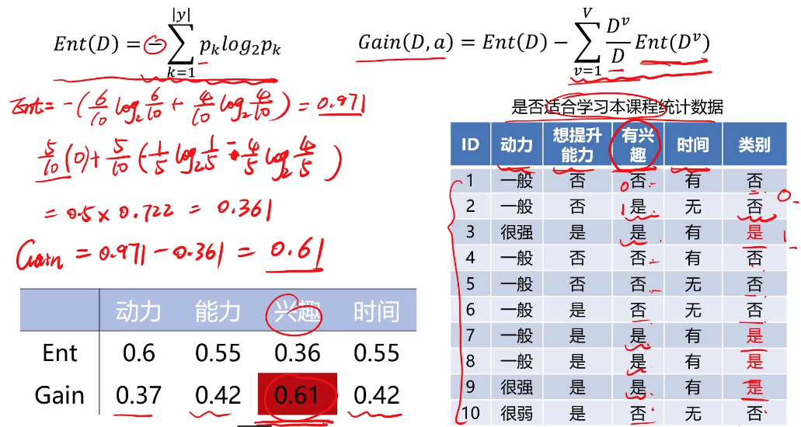
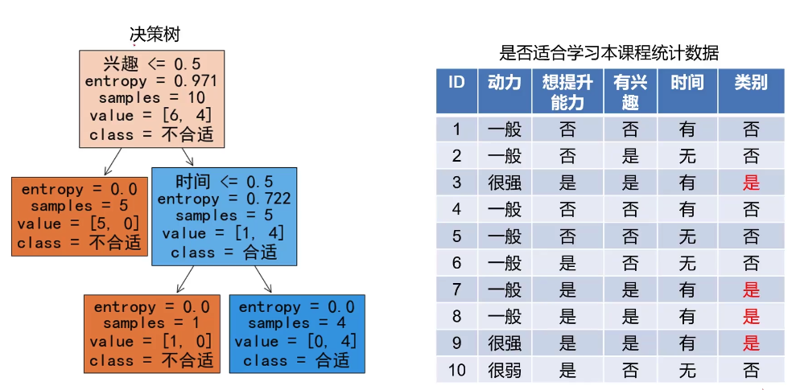

决策树
一种对实例进行分类的树形结构，通过多层判断区分目标所属类别。
本质：通过多层判断，从训练数据集中归纳出一组分类规则。
优点
- 计算量小，运算速度快
- 易于理解，可清晰查看各属性的重要性
缺点
- 忽略属性间的相关性
- 样本类别分布不均匀时，容易影响模型表现
属性间相关性是指，两个属性之间如果有关联，该模型会忽略其中的相关性。
样本分布不均匀，指的是某一个样本数量比较多。
决策树求解
假设给定训练数据集
\[D = \{(x_1, y_1), (x_2, y_2),...,(x_n, y_n)\} \]其中，
\[x_i = (x_i^{(1)},x_i^{(2)},...,x_i^{(m)})^T \]为输入实例, m为特征个数，
\[y_i \in \{1,2,3,...,K\} \]为类标记，
\[i = 1,2,...,N \]N为样本容量。
目标：根据训练数据集构建一个决策树模型，使它能够对实例进行正确的分类。
问题核心：特征选择，每一个节点，应该选用哪个特征。
三种求解方法
ID3、C4.5、CART
参考资料：
1.https://www.jianshu.com/p/af7fd132de30
2.https://www.cnblogs.com/callyblog/p/9724823.html
ID3
利用信息熵原理选择信息增益最大的属性作为分类属性，递归的拓展决策树的分支，完成决策树的构造。
信息熵（entropy）是度量随机变量不确定性的指标，熵越大，变量的不确定性就越大。假定当前样本集合D中第k类样本所占的比例为\(p_k\)，则D的信息熵为：
Ent(D)的值越小，变量的不确定性越小。
\[p_k = 1 时： Ent(D) = 0 \]根据信息熵，可以计算以属性a进行样本划分带来的信息增益：
\[Gain(D,a) = Ent(D) - \sum_{v=1}^V{D^v\over D}Ent(D^v) \]V为根据属性a划分出的类别数，D为当前样本总数，\(D^v\)为类别v样本数。
\(Ent(D)\): 划分前的信息熵
\(\sum_{v=1}^V{D^v\over D}Ent(D^v)\)：划分后的信息熵
目标：划分后样本分布不确定性尽可能小，即划分后信息熵小，信息增益大
示例：

选择信息增益最大的属性作为第一个节点。
模型计算出来的结果： 
异常检测
概念：根据输入数据，对不符合预期模式的数据进行识别。
概率密度
概念：概率密度函数是一个描述随机变量在某个确定的取值点附近的可能性的函数。
公式
区间\((x_1, x_2)\)的概率为：
\[P(x_1, x_2) = \int_{x_1}^{x_2}{p(x)dx} \]\(p(x)\)是概率密度
高斯分布
高斯分布的概率密度函数是：
\[p(x) = {1\over\delta\sqrt 2\pi}e^{-(x-\mu)^2\over 2\delta^2} \]\[\mu = {1\over m}\sum_{i=1}^mx^{(i)} \] \[\delta^2 = {1\over m}\sum_{i=1}^m{(x^{(i)}-\mu)^2} \]其中，\(\mu\)为数据均值，\(\delta\)为标准差
当数据维度高于一维：
\[\begin{pmatrix} x_1^{(1)},&x_1^{(2)},&...&x_1^{(m)}\\ x_n^{(1)},&x_n^{(2)},&...&x_n^{(m)}\\ \end{pmatrix} \]1、计算数据均值\(\mu_1,\mu_2,...\mu_n,\)，标准差\(\delta_1,\delta_1,...,\delta_n\)
\[\mu_j = {1\over m}\sum_{i=1}^mx_j^{(i)} \] \[\delta_j^2 = {1\over m}\sum_{i=1}^m{(x_j^{(i)}-\mu_j)^2} \]2、计算概率密度函数\(p(x)\):
\[p(x) = \prod_{j=1}^{n}p(x_j;\mu_j,\delta_j^2) = \prod_{j=1}^{n}{1\over \delta_j\sqrt 2\pi}e^{-{(x_j-\mu_j)^2\over 2\delta_j^2}} \]判断\(p(x)\)是否大于阈值，小于阈值，标识该点为异常点。
主成分分析（PCA）
数据降维（Dimensionality Reduction）
数据降维，是指在某些限定条件下，降低随机变量个数，得到一组“不相关”主变量的过程。 数据降维技术中，PCA（principal components analysis）是应用最多的方法。
作用
- 减少模型分析数据量，提升处理效率，降低计算难度；
- 实现数据可视化。
PCA
目标
寻找k(k<n)维新数据，使它们反映事物的主要特征。
核心
在信息损失尽可能少的情况下，降低数据维度。
计算过程
- 原始数据预处理（标准化：\(\mu = 0, \delta=1\)）
- 计算协方差矩阵特征向量，以及数据在各特征向量投影后的方差
- 根据需求（任务指定或方差比例）确定降维维度k
- 选取k维特征向量，计算数据在其形成空间的投影
Iris数据集
Iris鸢(yuan)尾花数据集是一个经典数据集，在统计学习和机器学习领域都经常被用作示例
决策树模型训练
from sklearn import tree
# 实例化一个决策树模型
dc_tree = tree.DecisionTreeClassifier(criterion='entropy', min_samples_leaf=5)
# 训练模型
dc_tree.fit(X, y)
# 可视化决策树
tree.plot_tree(dc_tree, filled='Tree',
feature_names=['SepalLength','SepalWidth','PetalLength','PetalWidth'],
class_names=['setosa','versicolor','virginica']
)
criterion='entropy', 采用信息增益最大化（ID3算法），min_samples_leaf=5 表示样本数量多少就不去在分的数量
异常检测模型训练
from sklearn.covariance import EllipticEnvelope
clf = EllipticEnvelope()
clf.fit(data)
# 可视化异常数据
anamoly_points = plt.scatter(
data.loc[:, 'x1'][y_predict == -1],
data.loc[:, 'x2'][y_predict == -1],
marker = 'o',
facecolor = "none",
edgecolor = "red",
s = 250
)
PCA(iris数据降维后分类)
# 模型训练获得PCA降维后数据
from sklearn.decomposition import PCA
# n_components表示维度，等于4就是4维
pca = PCA(n_components=4)
X_reduced = pca.fit_transform(X_norm)
X_norm是标准化处理之后的数据，标准化处理的方式：
from sklearn.preprocessing import StandardScaler
X_norm = StandardScaler().fit_transform(X)
计算各成分投影数据方差比例
var_ratio = pca.explained_variance_ratio_
可视化方差比例：
plt.bar([1,2,3,4], var_ratio)
plt.title('variance ratio of each component')
plt.xticks([1,2,3,4], ['PC1','PC2','PC3','PC4'])
plt.ylabel('var_ratio')
plt.show()
可视化PCA后数据：
setosa = plt.scatter(X_reduced[:,0][y==0], X_reduced[:,1][y==0])
versicolor = plt.scatter(X_reduced[:,0][y==1], X_reduced[:,1][y==1])
virginica = plt.scatter(X_reduced[:,0][y==2], X_reduced[:,1][y==2])
获取均值和标准差方法：
均值：
mean = data.mean()
标准差：
sigma = data.std()